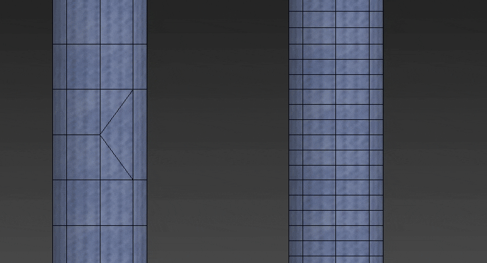
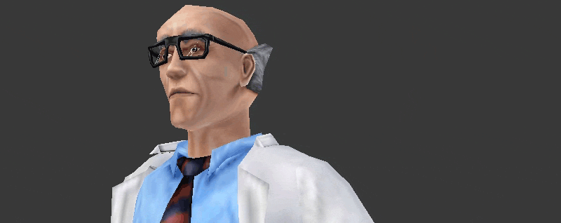
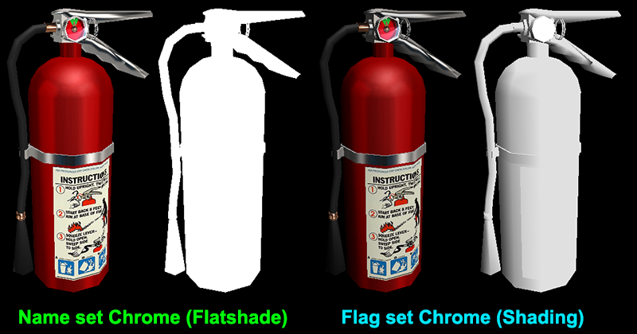
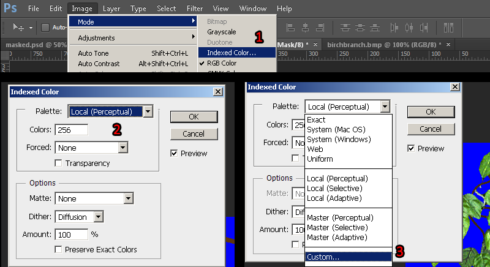
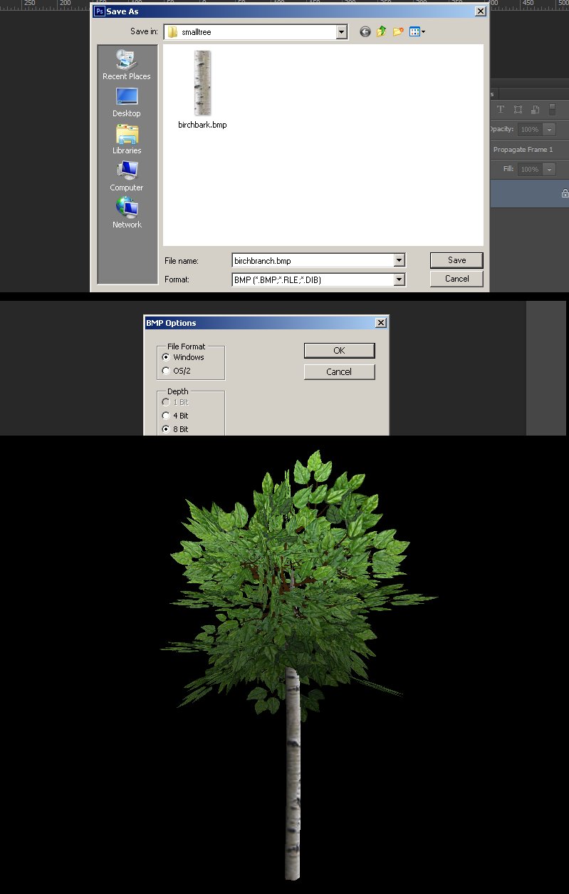

Hello, and welcome to the GoldSrc model exporting tutorial. This tutorial covers exporting models using 3DStudio Max, Blender, MilkShape 3D, kHED & Maya. This will not teach you how to 3D model, texture or UV unwrap. This tutorial begins with limits and texture preparation then will branch into the three modelling programs, then converge in the final chapter that is QC code and compiling.
Table of Contents:
1. Introduction & Basics
2. Required Tools
3.GoldSrc Model Theory
4. Texture Preparation
5. Special Texture Preparation
6. 3D Program Choices
INTRODUCTION: THE BASICS
First I will explain some key things you need to know about GoldSrc models. Meshes in GoldSrc models are in a format called SMD (studio model data). These SMD files and the BMP textures that comprise your model are compiled together by a QC file (Quake compile code for short. This is because GoldSrc began as the Quake1 engine). Half-Life models were originally made with 3DStudio max and many sources & .max scene files are found in the Half-life SDK (downloaded through steams "tools" tab). Smd's have to be made within limits or the program that compiles them "studiomdl.exe" will not work. Maximum limits per-smd are:
- 2048 vertices (or 4080 triangles )
- 2048 vertex normals
- 128 bones
- 512 keyframes per sequence
To overcome the vertex/triangle limits, you must break the model into separate .SMD files and specify the meshes in the QC. The maximum limits of a whole mdl file are:
- 8 bone controllers
- 4 bone attachments
- 32 submodels (mesh parts)
- 256 sequences
Mesh and texture limits you need to know:
1) Models use rigid vertex weights meaning there is only 1 weight per vertex. No vertex weights between bones. This has to be taken into consideration as you model topology to minimize stretching. Because of this, hard vertex weighting favors larger distances between moving loops when it comes to limb deformations.
2) Textures must be indexed 8bit BMP format. This means a chosen pallete limit of 256 colors achieved through pallete conversion methods and/or dithering.
3) Valid texture dimensions are in multiples of 16 though its recommended that you have them created in powers of 2 since by default most GoldSrc games do GL texture resizing for non-power2 textures (to disable this use gl_round_down "0" in console or config ). The maximum vanilla goldsrc texture dimensions are 512X512.
Keep in mind that many goldsrc games by default restrict the maximum displayed texture dimensions to 256X256. To be sure you can display higher, open the console and type "gl_max_size". Some games/mods have the default set to "gl_max_size 512" allowing for 512X512 model textures to be displayed properly.
Lastly, Sven Co-Op and Xash3d have a higher engine limit of 1024X1024 textures.
4) Using the classic studiomdl.exe cannot tile UV's outside the texture space, because the compiler will clamp anything outside. However, with a new modernized studiomdl.exe (Sven Co-ops compiler & Xash3d's compiler) you can tile textures in goldsrc.
5) There are two transparency options: Additive (Additive color blending), and masked (1-bit alpha-test transparency)
Masked textures must have the masked or transparent portion to be 1 color only that is the very last color of the 8-bit BMP palette (last index number 255; 0 is first). Most common masked color is pure blue (RGB value: 0 0 255). These QC code parameters can be set with:
$texrendermode "texturename.bmp" additive
$texrendermode "texturename.bmp" masked
These flags can also be set in a model viewer (Half-Life Asset Manager, HLMV:Standalone, P2MV) after compile by checking the "transparent", or "additive" in the textures tab, then saving the model. Other mods like Sven Co-Op or Xash3d have additional texture render modes. These are documented in the QC glossary.
6) Special "CHROME" textures give a very basic environment map effect. These textures must be 64X64 pixels and have CHROME in the filename separated by a _ example: "CHROME_metalpipe.BMP". This way the compiler can flag the texture to use this effect. It can also be checked in the model viewer with the "Chrome" flag in the textures tab and then saving the model.
8) In standard GoldSrc there isn't any "do not backface cull" texture setting, so for double sided things will have to have duplicated & flipped geometry in place.
9) In order to compile models with more than 4080 triangles, you must break up your SMD's into parts and give them their own $body lines for compiling. Also, FOR THE LOVE OF ALL THAT IS HOLY PLEASE DO NOT GO CRAZY ON YOUR TRIANGLE COUNT; remember this is goldsrc, not source engine. Going any higher than 9000 tris is excessive and direct ports from source/other games are inefficent, wasteful, and cause performance issues for the old renderer.
Required & Recommended Tools
1) Install Half-Life Asset Manager as your model viewer. If HLAM doesn't work on your machine you can use the predacessor HLMV Standalone. If working on a XASH project use P2MV for your model viewer
(NOTE: While P2MV has full GoldSrc compatibility, Id caution using resave function for anything non-Xash).
2) Get a modernized studiomdl.exe. The Sven Compiler which is a good improvement can be found here:
Sven Studiomdl.exe (this can also be found in the Sven SDK through steam in "tools" tab)
More info on this compiler here.
For those using Xash3d you can find that compiler in this thread on HLFX.RU.
3)Crowbar Tool should be used as your GUI wrapper, as it can place models directly into your working or steam folder and allows for a vastly smoother workflow. To set it up config your Half-Life profile to point to your newly installed model viewer and studiomdl.exe and steam game directories.
Model edits or obtaining skeletons need to be from decompiling existing models using Crowbar. If you need to do this, this is the way to configure crowbar for GoldSrc decompiles:
Keep in mind if you *just* need a skeleton you can uncheck "Bone Animation SMD files".
GoldSrc Model Theory
Due to being such an old game engine the most noticable limitation to 3D modellers is the limitation of "Hard Vertex Weighting". With this you only have either weighted or unweighted, also known as "hard weight". Due to the lack of soft mesh influence this creates a large amount of issues that directly conflicts with most modern workflows, but if you are familiar with lowpoly style you probably know this.
As said before, you want to give loop distance room in movable models


Part1: Texture Preparation
In this section I will show some methods of creating indexed BMP texture conversion. Ill start with Photoshop but if you are using another program I have an alternative method that works for all others.
1) To convert the texture to indexed color by going to mode> Index.. and set to any of the "local" palettes (perceptual, selective, and adaptive*). Preview the image. If your image has gradients than start to get a "banding effect", you can lessen these harsh edges by using the Dithering option. Dithering scatters pixels between transitions to make them somewhat smoother.
*Adaptive algorithm reproduces colors most often in image, Perceptual takes spectrum priority of the eye, Selective favors colors that appear in large areas and graphics.
2)Save the image as .BMP format. A preview of a model that this texture belongs to.
If you do not have Photoshop, the common option for making an indexed color image is "save as 8bit", "256 colors", or "indexed".
If your program is lacking in creating a decent palette or cannot save properly, you can save out your image as a 24bit BMP and use IRFANVIEW to do the 8bit conversion. I encourage to use this way if you are using Paint.net or GIMP because ive found that 8-bit conversion in those programs tend to not reproduce accurate results.
If you have a model that needs a smooth gradient and dithering is just not acceptable for you, there is a way of getting better color range by separating your textures by general color. This may require you to modify the UVs on your model to separate images/IDs.
If your model Has no special texture types and you are ready, click here to skip to 3D modelling package section
Special Texture Types
In standard GoldSrc there are three main special texture types and a final lesser known one:
Chrome: Simple environment map for metal like textures.
Additive: blending mode for effects like glows (pure black is hidden and lighter is visible)
Masked: Simple 1-bit transparency mask defined by a pallete index. This more commonly known as alphatest.
Flatshade: Ignores vertex normals shading all polygons uniformly without visible shadows. Best use for stylized pained shadows models/cartoon/anime style.
Sven-Coop & Xash3d have an additional flag called "Fullbright" however I cover that in a separate tutorial found here.
This section will describe the texture creation but the final compile flags will come in the later QC chapter.
The first special type is chrome. As described earlier, these are simple env maps that are used for metal or reflective type textures. Combined with additive they make for a glass look. The Chrome effects most notable examples are barneys helmet, the magnum revolver, the gauss gun, and the alien grunt armour.
A Chrome texture is created and indexed like as before but must be 64X64 pixels (Sven-Coop doesn't have this limit). When saving the BMP, the name "chrome" must be in the filename and the filename separated by a _ example: "CHROME_metalpipe.BMP". This way the compiler can flag the texture to use this effect.

Here we see an example of the chrome effect. By default the "Chrome" effect is a flatshade style lighting which means while it can be lightened and darkened due to environment it does it uniformly and shows so real distinct shadowing.
There is a trick you can use to add some shadowing if desired. Instead of putting the "chrome" in the filename, use either the Sven Compiler with $texrendermode texture.bmp chrome or use Paranoia2 model viewer to set the chrome flag (and remove the flatshade flag if enabled.)
Since Chrome is a large topic I have created a new guide on chrome creation found here.
The second special type is "Additive". Additive light blending textures do not require any special things other than remembering that bright = opaque and black is fully invisible. All you need to do is make a simple texture starting with pure black canvas. Convert to pallete as before.
An important thing to know about Additive on models is that they are subject to local model lighting as well, so they will be darkened in low light conditions. They are not traditional fullbright in a sense, so if you do need a fullbright additive model in your map, create the model but do not use the additive compile flag and instead set the "additive" blend mode in hammer on the entity render mode. An example of this is the world&satellite hologram in the blast pit chapter. Sven Co-Op and Xash3d have the additional fullbright compile flag see here.
Setting the texrendermode flags in the QC file will come later in the compiling chapter.
Masked textures use a solid color that is the last color of the indexed palette as the transparent mask. This is a 1-bit form of transparency also known as "Alphatest" (so no semi-transparent/soft areas). Get your image ready by creating a selection from either lasso, quick select, pen, quickmask, ect. Create a clipping mask from this selection. In this case I have an existing transparency, so I will be creating a threshold for the alphatest.
In many cases if you need just a simple transparency that can be added by a threshold fill (no antialiasing selection/pencil tool) of pure blue ( RGB[0 0 255] or HEX:#0000ff ) and skip to step3
1)Use AlphaUtility" from this page which will pad out your transparency range (alternativley if you use Xnormal there is another plugin that does this Xnormal plugin use the "dialation..." filter.). This is done to keep a "fringe" from forming when we threshold the transparency. Next after running "Dialate many times" from the Actions, ctrl-click the topmost layer to load a selection. With the selection loaded merge visible layers then click the "layer mask" button on your layer window.
2) Create a layer below the masked image and then use the fill command (shift-F5) to fill that layer with pure blue ( RGB[0 0 255] or HEX:#0000ff ). select your clipping mask and go to Image > adjustments > threshold. You will now have a slider bar that you will adjust to set the hard threshold of your mask, this ensures you don't have any blending or aliasing which is bad for alphatest masked transparency. Do fine adjustments on this mask using the pencil tool (has hard edges to match requirements) with black or white.
NOTE: If your image touches the edge of the document, you should put at least a 1px border of the transparency, this is because any pixels touching any side of the document can sometimes "wrap" to the opposite side of the image.
3) When finished convert the image to indexed color just like before, only after choosing your local palette, go to the rollout and choose "custom".

4)With the custom palette open ctrl-click the pure blue color to remove it from its index and re-add it to the final index by clicking the final slot and entering either RGB[0 0 255] or HEX #0000ff.
5)Save the image as BMP. An example of masked in action.

Setting the texrendermode flags in the QC file will come later in the compiling chapter.
If you do not have Photoshop, swapping indexes will be a bit more difficult since IRFANVIEW is not able to do that, however we can use Wally to swap the indexes. Wally has 2 methods of swapping indexes, A: automatic blue detection by adding the wildcard "{"character to the front of the texture. B: Manual index location swapping.
A) Automatic detection method is done by adding the "{"character added to the front of your bmp name. Then opening wally, and going file>New wad ("Half-Life [WAD3] package") then drag and drop your bmp into the package window. Then verify if the blue has been swapped to the end of the pallete preview. Finally right-click to export the BMP.
B) Manual detection method is done by opening wally, and going file>New wad ("Half-Life [WAD3] package") then drag and drop your bmp as before but this time click the blue color in the pallete preview and go to Color> Translate Colors... Put "Index 255" as the destination and then check "Swap Indexes". When done right click and export as before.

The final special type is Flatshade. Flatshade was always a part of GoldSrc however wasn't readily accessible with any tools until fairly recently using new compiler's that allow for the flatshade $texrendermode flag to be set, and can be set easily with the Half-Life Asset Manager or HLMV:Standalone.
I will also mention in this section an additional mode that is set by a global flag called "no shadelight" aka "$flags 256". The difference in $texrendermode flags are per-texture where a global $flags affects everything.
Here we see an example of a normal model, a model with a global flag "noshadelight" and a "Flatshade" set on all chosen textures. The global cuts the shadowing by roughly 50% while flatshade completley removes visible shadowing and only darkens and lightens as a whole depending on environment.
This is particularly useful for many hand-painted styles that might get muddied by harsh black shadows and particularly cartoon/anime styles. A further example of this can be found here. For complete ignoring of all lighting whatsoever there is fullbright, but that is only avalible in Sven-Coop and Xash3d.
{kind=link}
More info on setting the texrendermode flags in the QC file will come later in the compiling chapter.
With your textures prepared, continue on to your preffered 3d modelling package: